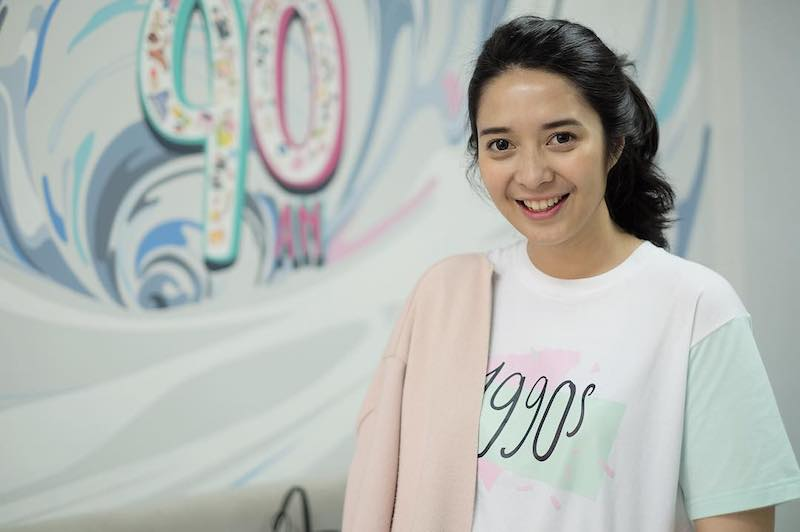
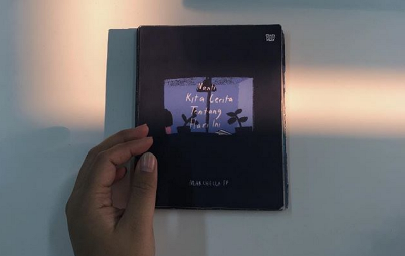
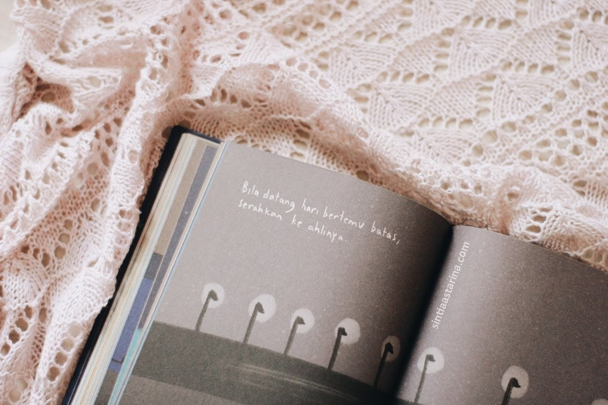
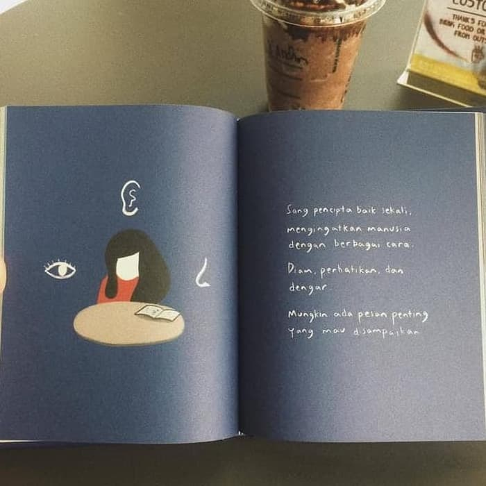
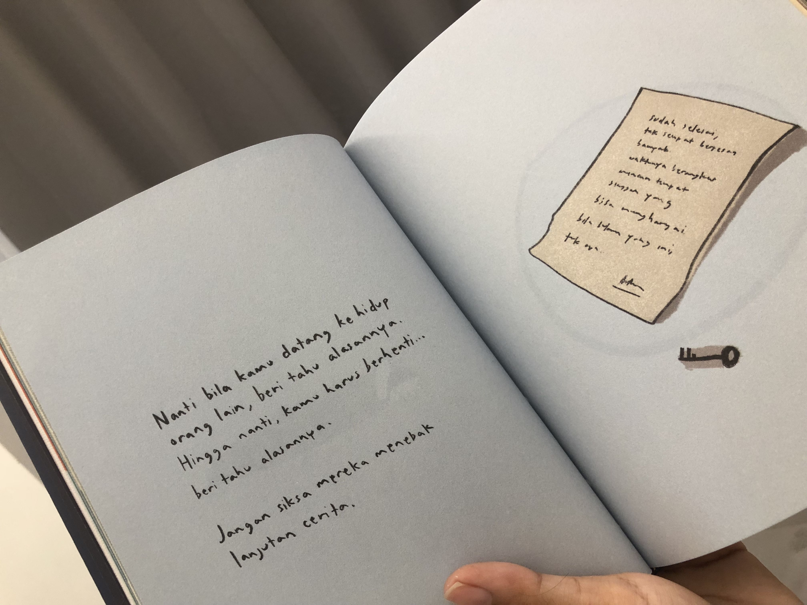
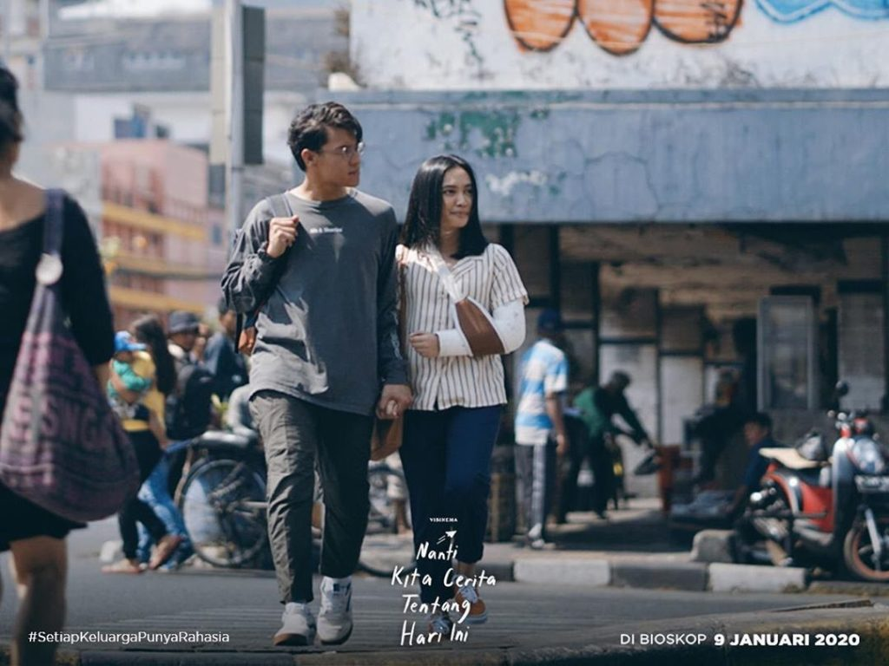

Nanti Kita Cerita Tentang Hari Ini, Petuah Ibu untuk Sang Anak

The Story Behind
Marchella FP telah kembali.
Ia telah menelurkan dua buku, Generasi 90an (2013) dan Generasi 90an: Anak Kemaren Sore (2015). Dua buku itu ibarat mesin waktu yang mengajak pembacanya pada serba-serbi dekade 1990-an. Di buku ketiga, Nanti Kita Cerita Tentang Hari ini (NKCTHI) Marchella membuat sebuah lompatan. Bukan masa lalu yang dikuliknya, tapi masa depan. Sebentar, yang dimaksud masa depan di sini bukanlah isi bukunya berisi apa-apa yang bakal jadi tren di generasi 2020-an atau 2030-an. Bukan. Di buku ini kita bertemu dengan seorang perempuan berusia 27 tahun dan juga seorang ibu. Perempuan di buku itu bernama Awan. Nama itu dipilih karena “awan selalu punya cara untuk menjaga dan menghibur bumi serta isinya,” ujar sang ibu. Namun tak mudah menjadi awan seperti harapan ibunya. Baginya, jadi bohlam saja lebih dari cukup, untuk menerangi dan memberi kehangatan sebuah ruang yang kecil.

Nasihat sebagai pengingat menjalani hidup
Lewat Awan, Marchella mengandaikan diri memberi petuah untuk menjalani hidup buat anaknya kelak. Ia antara lain berpesan,“Jalan yang jauh, jangan lupa pulang.” Dan juga nasihat ini yang gamblang,“Jadi manfaat untuk sekitar. Kalau belum mampu, jangan jadi beban.”
Tentu saja, nasihat-nasihat di buku ini tak harus dibaca sebagai petuah ibu pada anaknya. Kita bisa membuka halaman mana saja secara acak (O iya, buku setebal 200 halaman ini tak dinomori) lalu mengambil nasihat di sana sebagai pelajaran maupun pengingat. Misalnya ini, di sebuah halaman yang terdapat ilustrasi tutup kaca di dalamnya terdapat sofa dan meja. Di bawah gambar ada tulisan,
“Nyaman itu jebakan.”
Nasihat itu berguna banget buat kamu yang saat ini merasa terjebak di zona nyaman, entah itu di bidang pekerjaan maupun hubungan dengan pacar. Eh, tunggu, kalau punya pacar kan memang harus cari yang bikin nyaman, ya.
Di sebuah gambar seseorang tengah berjalan diikuti bayangannya, Marchella menulis,
“Lari sekencang-kencangnya kemanapun kamu mau… Tapi, masalahmu tidak akan pergi. Dia ada di sana, di belakangmu. Sampai kamu berani, berbalik arah dan hadapi.”
Ini pesan untuk siapa saja agar berani menghadapi masalah, alih-alih lari.
Dibangun dari komunitas
Konon buku ini begitu laris manis. Tidak sampai 1 minggu dirilis, buku ini sudah dicetak hingga 11 kali. Dicari di toko buku susah. Yang ingin beli harus pre-order dahulu. Pertanyaannya, bagaimana bisa buku NKCTHI ini begitu diburu orang?
Kuncinya satu, komunitas.
Pembaca NKCTHI adalah mereka yang sejak awal telah termotivasi oleh kalimat-kalimat inspirasional dan gambar indah di akun Instagram NKCTHI yang ia kelola. Sejak Februari, Marchella membuat akun yang quotable dan jleb banget buat generasi milenial dan gen Z.

Artinya, calon pembacanya tak dibangun dalam sehari. Ini mungkin yang alpa dilakukan banyak penulis kita, yang lebih tekun meriset dan menulis tapi abai memikirkan, kira-kira bukunya bakal dibaca orang nggak, ya?
Marchella juga paham betul kaum milenial dan gen Z paling suka kalimat-kalimat quotable. Generasi ini akrab dengan gadget sejak kecil. Mereka terbiasa membaca dan menulis serba singkat.
Setelah bisa membaca, mereka langsung berkenalan dengan Facebook dan Twitter. Maka, mereka umumnya tak suka baca buku tebal-tebal. Mereka juga lebih menyukai aspek visual ketimbang yang isinya melulu tulisan. Di sini, market untuk bukunya sudah ada.
Akan tetapi market yang ada takkan memberi efek apapun bila tak digaet. Mereka harus dikumpulkan dalam sebuah wadah bernama komunitas.

Membangun komunitas adalah hal yang disadari betul Marchella. Sejak buku pertama Generasi 90an sukses berat, Marchella menampung mereka yang mengalami masa kecil tahun 1990-an dalam komunitas yang dibangunnya di media sosial. Ia menggiring mereka mengikuti akun Instagram Generasi 90an untuk terus bernostalgia dengan era itu.
Postingan baru dibuat reguler. Yang tak tertampung di buku dimuat di Instagram. Yang ada di Instagram lalu lahir di buku kedua, Generasi 90an: Anak Kemaren Sore. Buku keduanya juga sukses karena komunitas calon pembelinya sudah ada.
Namun, bermain-main dengan nostalgia saja rasanya tak cukup. Seiring waktu, lulusan Desain Komunikasi dan Visual di Universitas Bina Nusantara ini punya keresahan batinnya yang lain.

Mungkin ia merasa generasinya maupun generasi di bawahnya kini menjalani hidup seolah tanpa arah dan tujuan. Ia memandang mereka terlalu bergegas maka ia menasihati: "Nafas sebentar, apa sih yang dikejar?"), sibuk jadi komentator "Bangun! Buat karyamu, dan biarkan mereka menjalankan tugasnya." dan lain sebagainya.
Keresahan itu ia tuangkan lewat buku. NKCTHI hasilnya. Buku NKCTHI bisa jadi sahabat yang baik untuk itu. Alhasil, setelah Generasi 90an dan NKCTHI, kita pun terus menanti, apa lagi ya yang akan dilahirkan Marchella di kemudian hari.

Produksi Film
Pada 11 Februari 2019, Visinema mengumumkan akan mengalihwahana novel Nanti Kita Cerita tentang Hari Ini menjadi film berjudul sama. Angga Dwimas Sasongko diumumkan menjadi sutradara film ini. Jenny Jusuf yang terlibat dalam penulisan naskah skenario ini merupakan sosok di balik sejumlah film yang cukup sukses seperti Filosofi Kopi dan Critical Eleven. IDN Media, Blibli.com, dan XRM Media ikut terlibat dalam produksi film ini sebagai produser eksekutif.

Nanti Kita Cerita tentang Hari Ini adalah film drama Indonesia tahun 2020 yang disutradarai oleh Angga Dwimas Sasongko dan diproduksi oleh Visinema Pictures.
Film tersebut diadaptasi dari novel berjudul Nanti Kita Cerita Tentang Hari Ini karya Marcella FP. Film tersebut dibintangi oleh Rachel Amanda, Rio Dewanto, Sheila Dara Aisha, Ardhito Pramono, Donny Damara, Susan Bachtiar, Oka Antara,
Niken Anjani, dan Agla Artalidia. Film ini awalnya dijadwalkan ditayangkan pada 9 Januari 2020, tetapi dipercepat seminggu ke 2 Januari 2020. Film ini akan tayang di Netflix mulai 23 Mei 2020.
Review
95 dari 100
Berikut trailer clip dari film Nanti Kita Cerita Tentang Hari Ini. Selamat menonton!